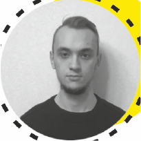
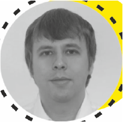
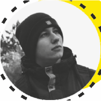
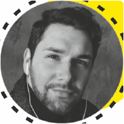

<code/R> — самая крупная IT-конференция в Омске.
В этом году мы расширяем границы и выходим в онлайн, чтобы поделиться своим опытом в построении технологических решений и познакомиться с крутыми кейсами коллег из других компаний. Лучшие практики и дельные советы, подробные tutorials и заряжающие воркшопы – скорее к программе!
<день/R> — первый день конференции для студентов и начинающих специалистов в IT. Вы сможете погрузиться в работу Raiffeisen Tech Center – от тестирования продуктов до техподдержки – и даже попробовать себя в роли сотрудников Service Desk в игровом формате.Не пропустите этот день, если хотите определиться с направлением работы в IT, прокачать свои навыки в QA/тех.администрировании или попасть в нашу крутую команду.
{Проекты}
Узнаем, как развернуть Kubernetes в корпоративной среде, вырастить OpenSource-проект, построить модели для прогнозирования TER и решить, какой же он – космический микро-фронтенд?
{Стек технологий}
Поговорим про Kafka, .NET, Kubernetes, SpringCloud, PostgreSQL, Rsyslog и многое другое.
{Инсайты}
Раскроем секреты, как полюбить обработку логов, научиться работать с проектами в Agile-организации и при каких условиях можно катить в прод.
Для кого эта конференция?
Для всех, кто интересуется современными трендами в сфере IT, обучается самостоятельно и мечтает о карьере в IT
Для тех, кто работает с Java, .Net, DevOps, SAS, DWH больше 2 лет
Для разработчиков, тестировщиков, аналитиков и технических специалистов, которые хотят работать в родном городе
Для студентов и недавних выпускников, которые хотят начать карьеру в IT
Программа мероприятия
<день/R>: Day Zero (20 окт)
Доклад
Тестирование в банке: чем живут QA-инженеры
Диалог
Ток-шоу «Мама, я в Service Desk’е»
Диалог
Попасть в RTC: с регистрацией и смс
Доклад
PowerShell или куда нажать, чтобы стало хорошо
Панельная дискуссия
Искусство обучаться: техники и райфхаки
Игра
Как создать свою тех.поддержку?
<день/R>: Day 1 (21 окт)
Открытие
10 практических советов по масштабированию. Опыт Portfolio Management в Wargaming Platform
Доклад
Kafka кластер - от прототипа до production. Опыт платформенного DevOps
Доклад
Микрофронтенд – велосипед или космический корабль?
Игра
Портфельное планирование
Доклад
Машинное обучение и анализ данных
Доклад
Как вырастить OpenSource в банке
Доклад
Добавь интеллекта
Доклад
Юмор в публичных выступлениях. Техники стендапа
Панельная дискуссия
Аналитик в современной организации: зоны роста и угрозы
<день/R>: Day 2 (22 окт)
Доклад
Паттерны и антипаттерны непрерывных обновлений в практике DevOps
Доклад
ViennaNET - open source набор библиотек от RaiffeisenBank
Панельная дискуссия
Мобильная обработка фотографий
Доклад
Использование Kubernetes в корпоративной среде - опыт развёртывания в Райффайзенбанке
Доклад
Новый друг лучше старых трех
Панельная дискуссия
Как извлекать пользу из любого проекта
Доклад
Управленческая супервизия
Доклад
PostgreSQL кластер внутри Kubernetes
Доклад
Rsyslog: как я перестал бояться и полюбил обработку логов
Панельная дискуссия
Создание комьюнити
Почему мы делимся опытом в IT?
{Инновации}
В Райффайзенбанке их действительно много. Здесь внедряются новые технологические решения, а пилоты превращаются в уникальные продукты.
{Тренды}
Используем OpenSource-решения и практики DevOps, дружим с Agile и Scrum, внедряем LeSS-фреймворк. Изучаем и применяем блокчейн: провели три крупные сделки, последнюю — на проприетарной платформе R-chain
{Финтех}
Райффайзенбанк активно работает с финтех-стартапами. За 3 года мы запустили 50 пилотов с российскими и зарубежными стартап-проектами.
Спикеры
- 
Гулаков Иван
Райфайфзенбанк Гулаков Иван
РайфайфзенбанкГулаков Иван
РайфайфзенбанкГулаков Иван
РайфайфзенбанкГулаков Иван
РайфайфзенбанкГулаков Иван
Райфайфзенбанк
- 
Густов Константин
Райфайфзенбанк Густов Константин
РайфайфзенбанкГустов Константин
РайфайфзенбанкГустов Константин
РайфайфзенбанкГустов Константин
РайфайфзенбанкГустов Константин
Райфайфзенбанк
- 
Закиров Аким
Freelance photographer Закиров Аким
Freelance photographerЗакиров Аким
Freelance photographerЗакиров Аким
Freelance photographerЗакиров Аким
Freelance photographer
- 
Халкевич Роман"
Яндек еда Халкевич Роман"
Яндек едаХалкевич Роман"
Яндек едаХалкевич Роман"
Яндек едаХалкевич Роман"
Яндек едаХалкевич Роман"
Яндек еда